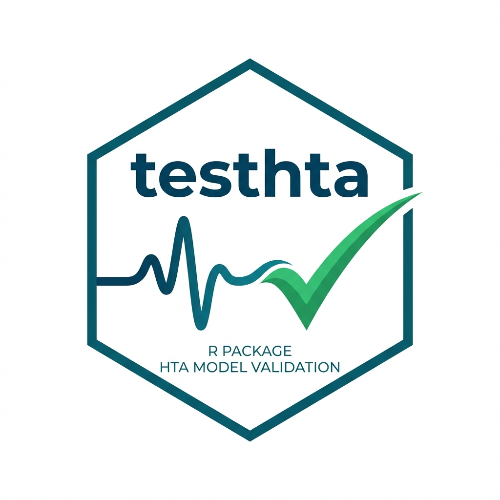

Package index
Model Validation & Verification Helpers
Exported assertion functions to write automated unit tests and check model boundaries.
-
run_model() - Run Markov model with parameters and overrides
-
check_model_qalys() - Run model and check QALYs against an expected value
-
check_model_costs() - Run model and check Costs against an expected value
-
check_model_le() - Run model and check Life Expectancy against an expected value
-
compare_model_runs() - Compare model outputs from two different parameter sets
Model Setters & Getters
Helper functions to modify input parameters and extract outcomes during test execution.
-
set_discount_rate() - Set discount rate
-
set_costs() - Set costs for a scenario
-
set_p_matrix() - Set transition probabilities for a scenario
-
set_utilities() - Set utilities for a scenario
-
set_time_horizon() - Set time horizon
-
get_qalys() - Getter for QALYs
-
get_costs() - Getter for costs
-
get_le() - Getter for life expectancy (LE)
-
get_icer() - Getter for ICER
Example Case Study Model
The cohort Markov model engine used as the demonstration environment for these testing tools.
-
ce_markov() - run cost-effectiveness model
-
p_matrix_cycle() - Time-dependent probability matrix
-
test_data - Standard baseline parameters for cost-effectiveness testing